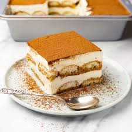

Home
Tiramisu

Ingredients
- 1 1/2 cups heavy whipping cream
- 8 ounce container mascarpone cheese ,room temperature
- 1/3 cup granulated sugar
- 1 teaspoon vanilla extract
- 1 1/2 cups cold espresso , prepared
- 3 Tablespoons coffee flavored liqueur ,optional (Kahlua or DaVinci brands)
- 1 package Lady Fingers ,Savoiardi brand can be found in the cookie aisle at your local grocery store, or online
- Cocoa powder for dusting the top
Method
- Add whipping cream to a mixing bowl and beat on medium speed with electric mixers (or use a stand mixer). Slowly add sugar and vanilla and continue to beat until stiff peaks. Add mascarpone cheese and fold in until combined. Set aside.
- Add coffee and liqueur to a shallow bowl. Dip the lady fingers in the coffee (Don't soak them--just quickly dip them on both sides to get them wet) and lay them in a single layer on the bottom of an 8x8'' or similar size pan.
- Smooth half of the mascarpone mixture over the top. Add another layer of dipped lady fingers. Smooth remaining mascarpone cream over the top.
- Dust cocoa powder generously over the top (I use a fine mesh strainer to do this). Refrigerate for at least 3-4 hours or up to overnight before serving.